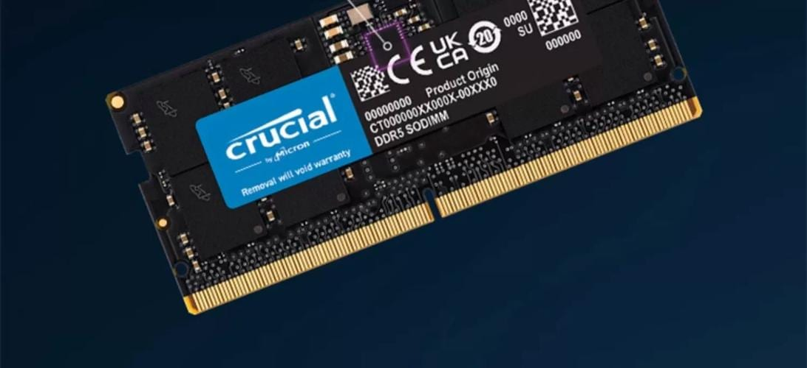

美光 Crucial DDR5-5600 32GB（2×16GB）

美光原厂出品的普条风格 DDR5，采用自家原厂颗粒与板载 PMIC，1.1V 标准电压稳定节能，兼容性扎实，是追求稳定与性价比的 DDR5 装机方案。
客观评测
Crucial DDR5-5600 套装为 2×16GB，标称时序 CL46，工作电压仅 1.1V，符合 JEDEC 标准并支持 XMP 3.0 与 AMD EXPO 一键超频。采用美光原厂颗粒与板载 PMIC 电源管理，信号完整性与长期稳定性有保障。散热片高度约 32mm，对大型塔式风冷兼容良好。5600MT/s 适合 AM5 与 Intel 平台的主流档位，性能满足游戏与生产力需求。
主观点评
选择美光普条的人多半图个安心，它没有炫酷马甲，插在主板上朴素得几乎被忽略，但使用中很少给你添麻烦。低电压带来的低温让人放心装进散热环境一般的机箱。时序参数不如高频游戏条激进，跑分略逊一筹，实际游戏差距微乎其微。对于一次点亮、用到退役的稳定型用户，这种原厂条反而是更理性的选择。
优点与不足
- 美光原厂颗粒，稳定性与一致性好
- 1.1V 低电压，发热与功耗低
- 价格实惠，适合大容量需求
- CL46 时序偏松，极限性能一般
- 外观朴素，散热片无灯效
参数规格
| 容量 | 32GB（2×16GB） |
|---|---|
| 类型 | DDR5 台式机内存 |
| 频率 | 5600MT/s（PC5-44800） |
| 时序 | CL46 |
| 电压 | 1.1V |
| 颗粒 | 美光原厂 DRAM 颗粒 |
| 散热 | 铝质散热片 |
| 高度 | 约 32mm |
| 超频 | 支持 Intel XMP 3.0 / AMD EXPO |
| PMIC | 板载电源管理芯片（PMIC） |
| 兼容 | Intel 600/700 系、AMD AM5 平台 |
| 质保 | 有限终身质保 |